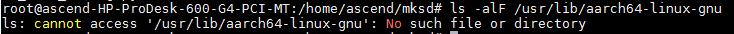
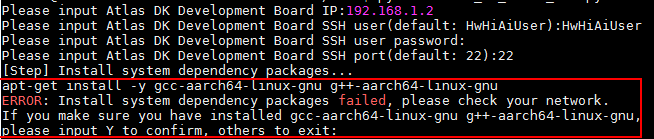

Configuring the Cross Compilation Environment in the UI Host
Before using the Atlas 200 DK to develop apps, you need to configure the cross compilation environment on the Linux server where Mind Studio is located.
NOTE:
If the Linux server used in Preparing the SD Card is the server where Mind Studio connected to the Atlas 200 DK is located, skip this section. During SD card preparation, a cross compilation environment is automatically deployed for the Linux server.
Prerequisites
Perform the following steps to check whether the cross compilation environment has been deployed:
ls -alF /usr/lib/aarch64-linux-gnu
If the information shown in Figure 1 is displayed, the cross compilation environment has been configured for the server where Mind Studio is configured. Skip this section.
Figure 1 Message indicating the cross compilation environment is deployed

If the information shown in Figure 2 is displayed, the cross compilation environment of the server where Mind Studio is located is not configured. In this case, manually configure the cross compilation environment as follows.
Figure 2 Message indicating the cross compilation environment is not deployed

Procedure
Obtain the make_ui_cross_env.py script for configuring the cross compilation environment.
Obtain it from the tools repository at https://github.com/Ascend.
Upload the make_ui_cross_env.py script to any directory on the server where Mind Studio is located, for example, /home/ascend/mkuicross.
Switch to the root user and go to the /home/ascend/mkuicross directory where the make_ui_cross_env.py script is located:
su - root
cd /home/ascend/mkuicross/
Run the following command to install Pexpect:
pip3 install pexpect
Run the make_ui_cross_env.py script:
python3 make_ui_cross_env.py
The following information is displayed:
Atlas DK Development Board IP: IP address of the Atlas 200 DK developer board IP
Atlas DK Development Board SSH user: SSH login user name of the Atlas 200 DK developer board. Set this parameter to the common user. The default user name is HwHiAiUser.
Atlas DK Development Board SSH user password: password of the SSH login user of the Atlas 200 DK developer board
Atlas DK Development Board SSH port: SSH port number of the Atlas 200 DK developer board. The default value is 22.
If the Mind Studio server has been connected to the network:
During the script execution, the cross-compilers gcc-aarch64-linux-gnu and g++-aarch64-linux-gnu are downloaded and installed on the Linux server where Mind Studio is located. Figure 3 shows the execution result.
If the Mind Studio server is not connected to the network, the message shown in Figure 4 is displayed.
Figure 4 Message indicating cross compilers fail to be downloaded
If the message shown in Figure 4 is displayed:
- If the cross compilers gcc-aarch64-linux-gnu and g++-aarch64-linux-gnu have been deployed in the system, enter Y to continue the deployment of the cross compilation environment.
- If the cross compilers gcc-aarch64-linux-gnu and g++-aarch64-linux-gnu are not deployed in the system, enter any other keys to exit the script, manually download and install the cross compilers, and then run the python3 make_ui_cross_env.py command.